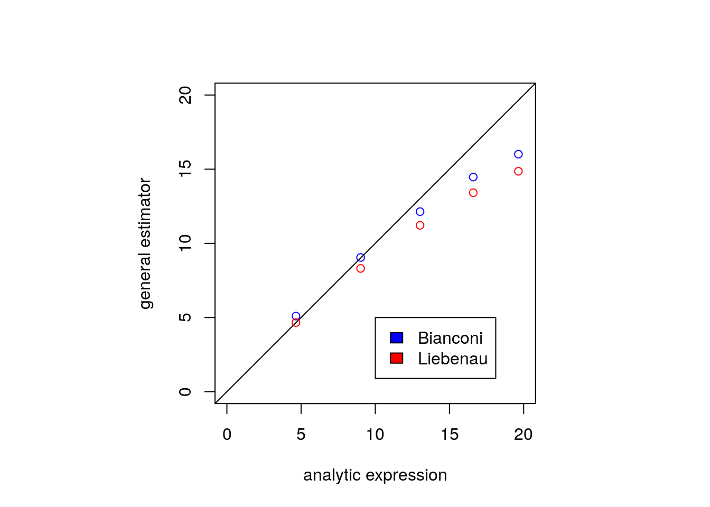
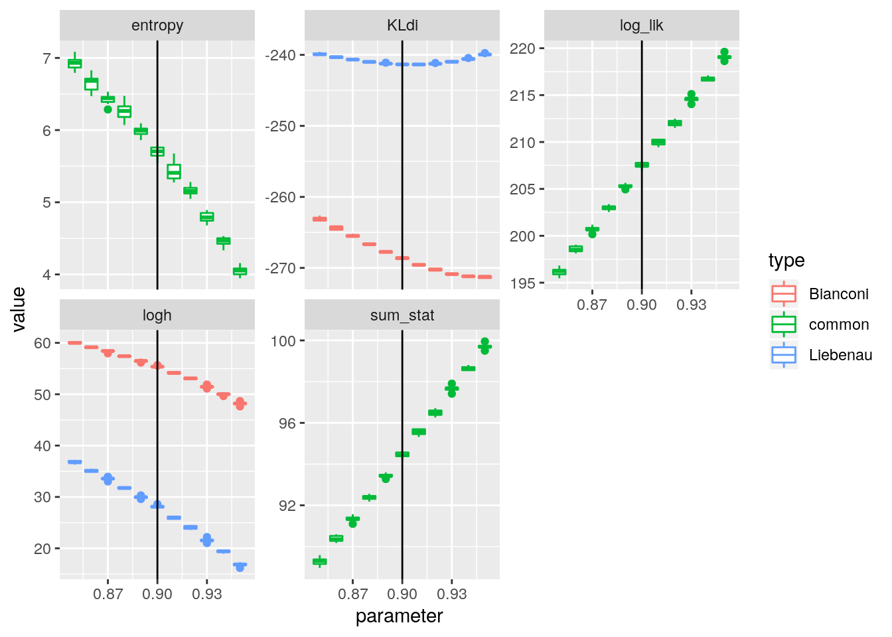
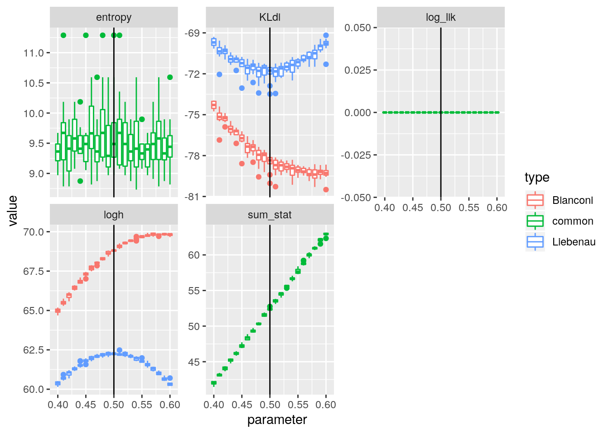
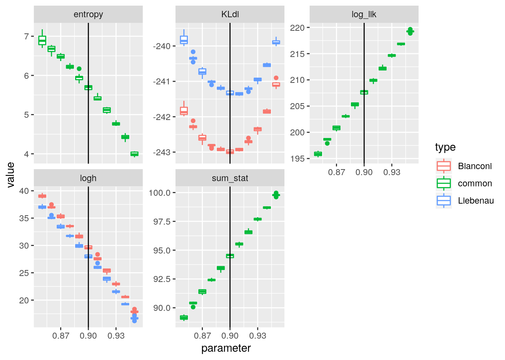
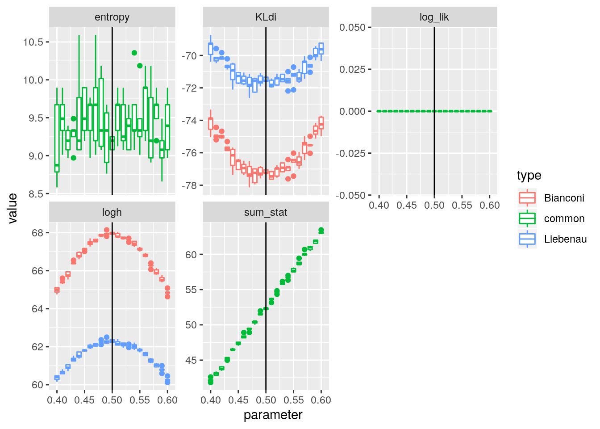
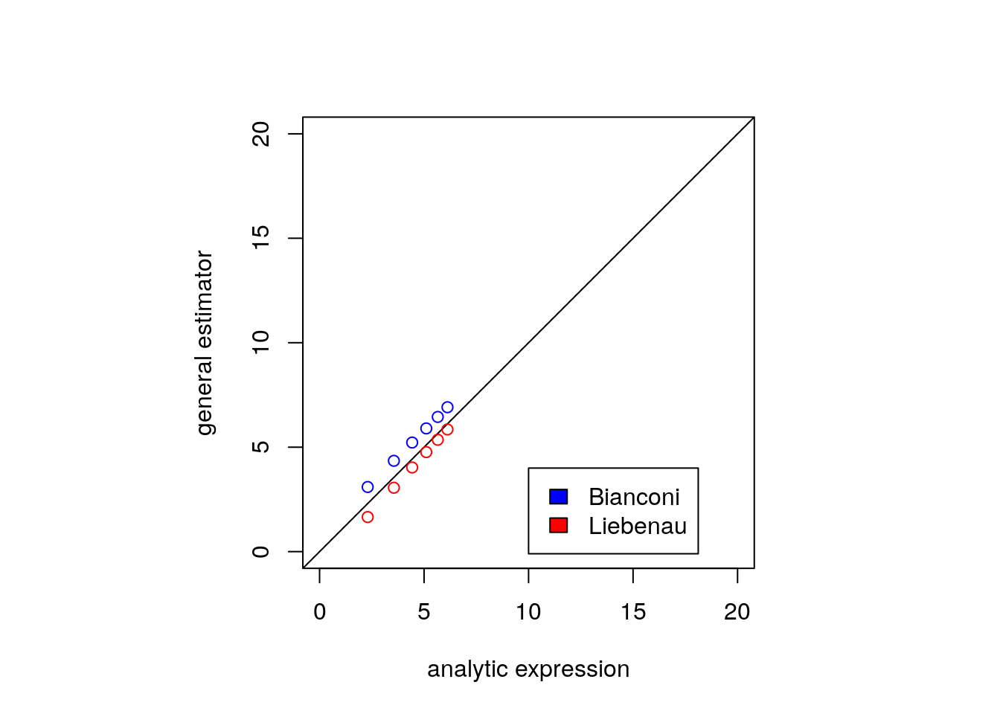
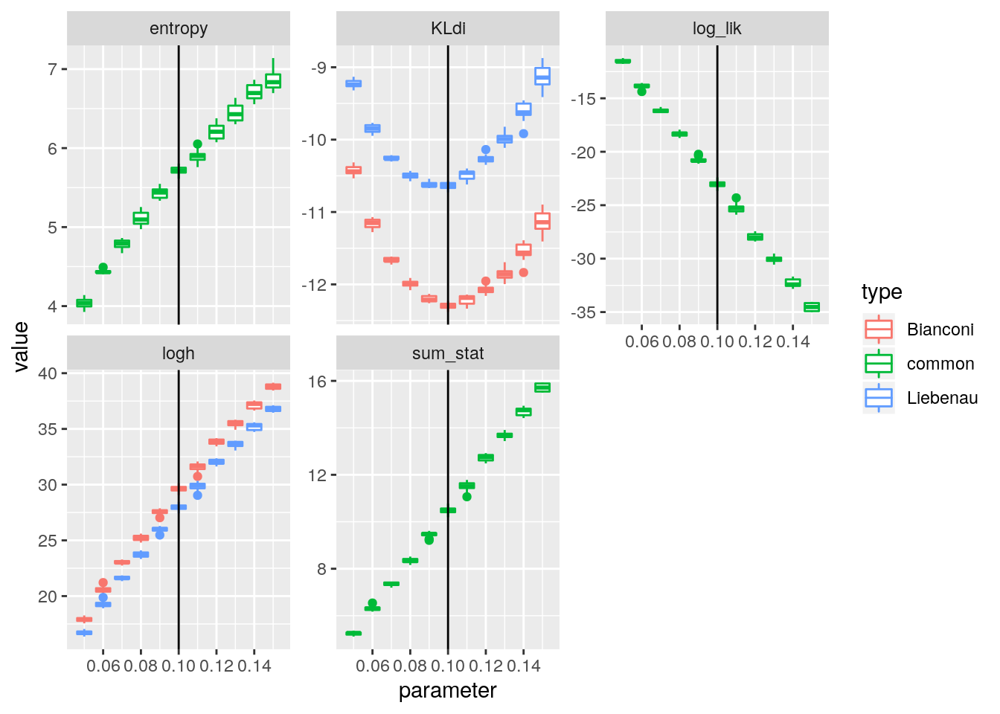

Update
Anthony Ebert
04/12/2019
set.seed(1)
library(StartNetwork)
library(parallel)
library(ggplot2)Tests
Here we test the functions used to estimate entropy and estimate the number of graphs corresponding to a particular sorted degree sequence. We find that the entropy computation is accurate, but estimating the number of graphs corresponding to a sorted degree sequence is more complicated.
Entropy
We compare entropy computed with the non-parameter estimator entropy_calc using samples from the binomial distribution, with the analytic expression for the limit of entropy for the binomial distribution. The same comparison is also made with the Poisson distribution.
x <- rbinom(10000, 1000, 0.9)
entropy_calc(x)## [1] 3.6657641/2 * log(2*pi*exp(1)*1000*0.9*0.1)## [1] 3.668843lambda <- 50
x <- rpois(1000, lambda)
entropy_calc(x)## [1] 3.320128k <- 1:100
lambda * (1 - log(lambda)) + exp(-lambda) * sum((lambda^k * lfactorial(k))/factorial(k))## [1] 3.373266Combinations of degree sequences
We check whether we are counting the space of graphs correctly. Firstly, we look at graphs where the degrees of the nodes are either zero or one, where the number of nodes with degree one is even. This means that network consists only of disconnected dyads.
Disconnected dyads
disconnected_dyad <- choose(choose(seq(15, 7, by = -2),2), 1)
x <- cumsum(log(disconnected_dyad))
disjoint_dd <- function(x, n = 15){
number_of_graphs_dd(c(rep(0,n - 2*x), rep(1, 2*x)))
}
y0 <- sapply(1:5, disjoint_dd)par(pty="s")
plot(x, y0, xlim = c(0, 20), ylim = c(0, 20), asp = 1, xlab = "analytic expression", ylab = "general estimator")
abline(c(0,1), col = "blue")
# plot(x, y0 - x, xlim = c(0, 20), ylim = c(-6, 6))Single triangle
n <- seq(5, 15, by = 2)
#onetriangle <- choose(choose(n,2), 1) * (n - 2)
onetriangle <- choose(n,3)
x <- log(onetriangle[1:6])
triangle_dd <- function(x){
number_of_graphs_dd(c(rep(0,x - 3), c(2,2,2)))
}
y0 <- sapply(n, triangle_dd)par(pty="s")
plot(x, y0, xlim = c(0, 10), ylim = c(0, 10), asp = 1, xlab = "analytic expression", ylab = "general estimator")
abline(c(0,1), col = "blue")
# plot(n, y0 - x, xlim = c(0, 15), ylim = c(-60, 60))Single reverse triangle
n <- seq(5, 15, by = 2)
#onetriangle <- choose(choose(n,2), 1) * (n - 2)
onetriangle <- choose(n,3)
x <- log(onetriangle[1:6])
triangle_dd <- function(x){
number_of_graphs_dd(c(rep(x - 1,x - 3), rep(x - 1 - 2, 3)))
}
y0 <- sapply(n, triangle_dd)par(pty="s")
plot(x, y0, xlim = c(0, 20), ylim = c(0, 20), asp = 1, xlab = "analytic expression", ylab = "general estimator")
abline(c(0,1), col = "blue")
# plot(n, y0 - x, xlim = c(0, 15), ylim = c(-60, 60))It seems that the base measure for the sorted degree sequence is more accurately measured for spare graphs than dense graphs. Let’s look now at graphs in the middle, regular graphs where the degree is n/2.
Regular graph
The analytic expression for the number of regular graphs is reported by McKay and Wormald (1991).
n <- seq(7, 21, by = 2)
#onetriangle <- choose(choose(n,2), 1) * (n - 2)
d <- (n - 1) / 2
lambda <- d / (n - 1)
regulargraphs <- sqrt(2) * exp(0.25) * (lambda^lambda * (1-lambda)^(1-lambda))^choose(n,2) * (choose(n-1,d)^n)
x <- log(regulargraphs)
regular_dd <- function(x){
number_of_graphs_dd(rep(x/2,x))
}
y0 <- sapply(n, regular_dd)par(pty="s")
plot(x, y0, xlim = c(0, 180), ylim = c(0, 180), asp = 1, xlab = "analytic expression", ylab = "general estimator")
abline(c(0,1), col = "blue")
# plot(n, y0 - x, xlim = c(0, 15), ylim = c(-60, 60))The base measure seems to accurately compute the sorted degree sequence for a regular graph midway between sparse and dense.
We demonstrate the application of these formulas with a simple example. The mechanistic model is GNP, and the statistical model is an ERGM where the summary statistic is the number of edges. We start with a sparse model where the parameter is 0.1, and then the second example is a dense model where the parameter is 0.9. Finally in example 3, we fix the expression so that it is more accurate for dense graphs.
Examples
n = 15
replicates = 400
mech_net_gnp = purrr::partial(igraph::sample_gnp, n = !!n, ... = , directed = FALSE, loops = FALSE)Example 1
Mechanistic model: Erdös-Renyi (target)
Statistical model: ERGM
Integral stat: sorted degree sequence
Likelihood stat: number of edges
true_value <- 0.1
theta_p <- rep(seq(0.01, 0.2, by = 0.01), 5)
theta_s <- log(true_value/(1 - true_value))
cl <- parallel::makeCluster(parallel::detectCores())
g <- parallel::parSapply(cl, theta_p, StartNetwork::KL_net, theta_s = theta_s, replicates = replicates, sorted = TRUE, mech_net = mech_net_gnp, lstat = igraph::gsize)
parallel::stopCluster(cl)library(ggplot2)
df <- data.frame(parameter = theta_p, KL = g)
ggplot(df) + aes(x = parameter, y = KL, group = parameter) + geom_boxplot() + ggtitle("Example 1") + geom_vline(xintercept = true_value)Example 2
Mechanistic model: Erdös-Renyi (target)
Statistical model: ERGM
Integral stat: sorted degree sequence
Likelihood stat: number of edges
true_value <- 0.9
theta_p <- rep(seq(0.80, 0.99, by = 0.01), 5)
theta_s <- log(true_value/(1 - true_value))
cl <- parallel::makeCluster(parallel::detectCores())
g <- parallel::parSapply(cl, theta_p, StartNetwork::KL_net, theta_s = theta_s, replicates = replicates, sorted = TRUE, mech_net = mech_net_gnp, lstat = igraph::gsize)
parallel::stopCluster(cl)df <- data.frame(parameter = theta_p, KL = g)
ggplot(df) + aes(x = parameter, y = KL, group = parameter) + geom_boxplot() + ggtitle("Example 2") + geom_vline(xintercept = true_value)
Example 3
Mechanistic model: Erdös-Renyi (target)
Statistical model: ERGM
Integral stat: sorted degree sequence
Likelihood stat: number of edges
true_value <- 0.5
theta_p <- rep(seq(0.3, 0.7, by = 0.01), 5)
theta_s <- log(true_value/(1 - true_value))
cl <- parallel::makeCluster(parallel::detectCores())
g <- parallel::parSapply(cl, theta_p, StartNetwork::KL_net, theta_s = theta_s, replicates = replicates, sorted = TRUE, mech_net = mech_net_gnp, lstat = igraph::gsize, mirror = FALSE)
parallel::stopCluster(cl)df <- data.frame(parameter = theta_p, KL = g)
ggplot(df) + aes(x = parameter, y = KL, group = parameter) + geom_boxplot() + ggtitle("Example 3") + geom_vline(xintercept = true_value)
Since we have found the space of dense graphs is counted inaccurately when the equation of Bianconi (2009) is naively applied, we map the space of dense graphs to the space of sparse graphs. In other words, we perform this simple conversion on the degree sequence: \[ d^* = n - d - 1 \]
Example 4
Mechanistic model: Erdös-Renyi (target)
Statistical model: ERGM
Integral stat: sorted degree sequence
Likelihood stat: number of edges
true_value <- 0.9
theta_p <- rep(seq(0.80, 0.99, by = 0.01), 5)
theta_s <- log(true_value/(1 - true_value))
cl <- parallel::makeCluster(parallel::detectCores())
g <- parallel::parSapply(cl, theta_p, StartNetwork::KL_net, theta_s = theta_s, replicates = replicates, sorted = TRUE, mech_net = mech_net_gnp, lstat = igraph::gsize, mirror = TRUE)
parallel::stopCluster(cl)df <- data.frame(parameter = theta_p, KL = g)
ggplot(df) + aes(x = parameter, y = KL, group = parameter) + geom_boxplot() + ggtitle("Example 4") + geom_vline(xintercept = true_value)
Example 5
Mechanistic model: Erdös-Renyi (target)
Statistical model: ERGM
Integral stat: sorted degree sequence
Likelihood stat: number of edges
true_value <- 0.5
theta_p <- rep(seq(0.3, 0.7, by = 0.01), 5)
theta_s <- log(true_value/(1 - true_value))
cl <- parallel::makeCluster(parallel::detectCores())
g <- parallel::parSapply(cl, theta_p, StartNetwork::KL_net, theta_s = theta_s, replicates = replicates, sorted = TRUE, mech_net = mech_net_gnp, lstat = igraph::gsize, mirror = TRUE)
parallel::stopCluster(cl)df <- data.frame(parameter = theta_p, KL = g)
ggplot(df) + aes(x = parameter, y = KL, group = parameter) + geom_boxplot() + ggtitle("Example 5") + geom_vline(xintercept = true_value)
We have successfully retrieved the parameter for a dense graph. To check
Single reverse triangle (mirrored degree sequence)
n <- seq(5, 15, by = 2)
#onetriangle <- choose(choose(n,2), 1) * (n - 2)
onetriangle <- choose(n,3)
x <- log(onetriangle[1:6])
triangle_dd <- function(x){
number_of_graphs_dd(c(rep(x - 1,x - 3), rep(x - 1 - 2, 3)), mirror = TRUE)
}
ym <- sapply(n, triangle_dd)par(pty="s")
plot(x, ym, xlim = c(0, 20), ylim = c(0, 20), asp = 1, xlab = "analytic expression", ylab = "general estimator")
abline(c(0,1), col = "blue")
ERGM as mechanistic models
Example 6
Mechanistic model: ERGM (target)
Statistical model: ERGM
Integral stat: sorted degree sequence
Likelihood stat: number of edges
n <- 15
mech_net_ergm <- purrr::partial(mech_net_ergm_n, n = !!n)
true_value <- 0.1
theta_p <- rep(seq(0.01, 0.2, by = 0.01), 5)
theta_s <- log(true_value/(1 - true_value))
cl <- parallel::makeCluster(parallel::detectCores())
g <- parallel::parSapply(cl, theta_p, StartNetwork::KL_net, theta_s = theta_s, replicates = replicates, sorted = TRUE, mech_net = mech_net_ergm, lstat = igraph::gsize)
parallel::stopCluster(cl)df <- data.frame(parameter = theta_p, KL = g)
ggplot(df) + aes(x = parameter, y = KL, group = parameter) + geom_boxplot() + ggtitle("Example 6") + geom_vline(xintercept = true_value)
Example 7
Mechanistic model: ERGM (target)
Statistical model: ERGM
Integral stat: sorted degree sequence
Likelihood stat: number of edges
n <- 15
mech_net_ergm <- purrr::partial(mech_net_ergm_n, n = !!n)
true_value <- 0.9
theta_p <- rep(seq(0.80, 0.99, by = 0.01), 5)
theta_s <- log(true_value/(1 - true_value))
cl <- parallel::makeCluster(parallel::detectCores())
g <- parallel::parSapply(cl, theta_p, StartNetwork::KL_net, theta_s = theta_s, replicates = replicates, sorted = TRUE, mech_net = mech_net_ergm, lstat = igraph::gsize, mirror = TRUE)
parallel::stopCluster(cl)df <- data.frame(parameter = theta_p, KL = g)
ggplot(df) + aes(x = parameter, y = KL, group = parameter) + geom_boxplot() + ggtitle("Example 7") + geom_vline(xintercept = true_value)Example 8
Mechanistic model: ERGM (target)
Statistical model: ERGM
Integral stat: sorted degree sequence
Likelihood stat: number of edges
n <- 15
mech_net_ergm <- purrr::partial(mech_net_ergm_n, n = !!n)
true_value <- 0.5
theta_p <- rep(seq(0.3, 0.7, by = 0.01), 5)
theta_s <- log(true_value/(1 - true_value))
cl <- parallel::makeCluster(parallel::detectCores())
g <- parallel::parSapply(cl, theta_p, StartNetwork::KL_net, theta_s = theta_s, replicates = replicates, sorted = TRUE, mech_net = mech_net_ergm, lstat = igraph::gsize, mirror = TRUE)
parallel::stopCluster(cl)df <- data.frame(parameter = theta_p, KL = g)
ggplot(df) + aes(x = parameter, y = KL, group = parameter) + geom_boxplot() + ggtitle("Example 8") + geom_vline(xintercept = true_value)sessionInfo()## R version 3.6.1 (2019-07-05)
## Platform: x86_64-pc-linux-gnu (64-bit)
## Running under: Ubuntu 18.04.3 LTS
##
## Matrix products: default
## BLAS: /usr/lib/x86_64-linux-gnu/openblas/libblas.so.3
## LAPACK: /usr/lib/x86_64-linux-gnu/libopenblasp-r0.2.20.so
##
## locale:
## [1] LC_CTYPE=en_AU.UTF-8 LC_NUMERIC=C
## [3] LC_TIME=en_AU.UTF-8 LC_COLLATE=en_AU.UTF-8
## [5] LC_MONETARY=en_AU.UTF-8 LC_MESSAGES=en_AU.UTF-8
## [7] LC_PAPER=en_AU.UTF-8 LC_NAME=C
## [9] LC_ADDRESS=C LC_TELEPHONE=C
## [11] LC_MEASUREMENT=en_AU.UTF-8 LC_IDENTIFICATION=C
##
## attached base packages:
## [1] parallel stats graphics grDevices utils datasets methods
## [8] base
##
## other attached packages:
## [1] ergm_3.10.4-5181 network_1.15 ggplot2_3.2.0
## [4] StartNetwork_1.0.0
##
## loaded via a namespace (and not attached):
## [1] gmp_0.5-13.5 Rcpp_1.0.3 DEoptimR_1.0-8
## [4] pillar_1.4.2 compiler_3.6.1 arrangements_1.1.7
## [7] tools_3.6.1 digest_0.6.20 evaluate_0.14
## [10] tibble_2.1.3 gtable_0.3.0 lattice_0.20-38
## [13] pkgconfig_2.0.2 rlang_0.4.0 Matrix_1.2-17
## [16] igraph_1.2.4.1 rstudioapi_0.10 yaml_2.2.0
## [19] xfun_0.8 coda_0.19-3 withr_2.1.2
## [22] stringr_1.4.0 dplyr_0.8.3 knitr_1.23
## [25] trust_0.1-7 grid_3.6.1 tidyselect_0.2.5
## [28] robustbase_0.93-5 glue_1.3.1.9000 R6_2.4.0
## [31] rmarkdown_1.14 purrr_0.3.2 magrittr_1.5
## [34] codetools_0.2-16 MASS_7.3-51.4 scales_1.0.0
## [37] htmltools_0.3.6 assertthat_0.2.1 lpSolve_5.6.13.2
## [40] colorspace_1.4-1 labeling_0.3 stringi_1.4.3
## [43] lazyeval_0.2.2 munsell_0.5.0 statnet.common_4.3.0
## [46] crayon_1.3.4Bibliography
Bianconi, Ginestra. 2009. “Entropy of Network Ensembles.” Physical Review E 79 (3). APS: 036114.
McKay, Brendan D, and Nicholas C Wormald. 1991. “Asymptotic Enumeration by Degree Sequence of Graphs with Degreeso (N 1/2).” Combinatorica 11 (4). Springer: 369–82.